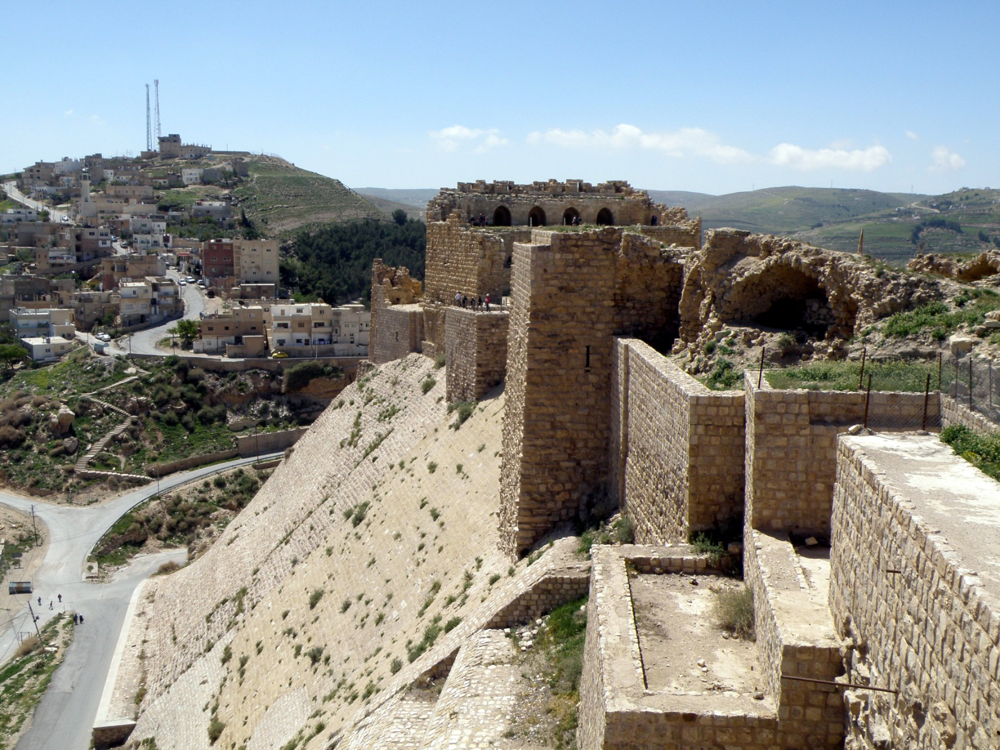
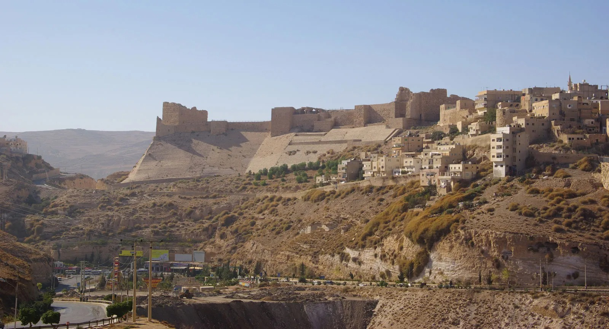
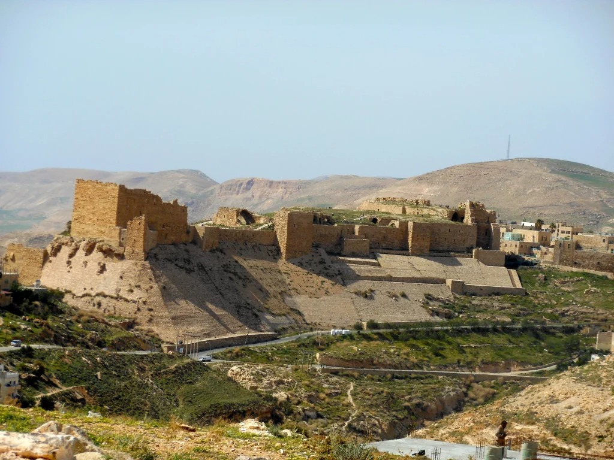

My City



🏙️ Al-Karak - Quick Facts
| Category | Details |
|---|---|
| Location | Southern Jordan, ~140 km from Amman |
| Elevation | ~950 meters above sea level |
| Population | ~32,000 people |
| Religions | ~75% Muslim, ~25% Christian |
| Famous For | Kerak Castle, a massive Crusader fortress |
🏰 History Highlights
- Biblical City: Known as Qir-hareseth in ancient Moab.
- Crusader Stronghold: Kerak Castle built in the 1140s.
- Resistant Spirit: Center of the 1910 revolt against Ottoman rule.
🍽️ Culture & Cuisine
- Known for: "Mansaf", Jordan’s national dish.
- Heritage: Rich Christian heritage with historic churches.